| 日付 | 2026年3月22日（日） |
|---|---|
| 山域 | 奥武蔵 |
| メンバー | 家族（妻） |
| 山行形態 | 日帰り |
| アクセス | 車 |
| ルート (Map) | 渓流荘 (7:52) - (9:31) 沢出合（道迷い） (10:23) - (11:30) 花園 (12:07) - (12:40) 大ドッケ - (13:54) 渓流荘 |
Webサイトでたまたまフクジュソウの咲く大ドッケという山の存在を知る。
かなり大規模な群落らしいので、行ってみることにする。
集落の中を歩いていく。こんな山奥深くまで集落があるとは驚きだ。
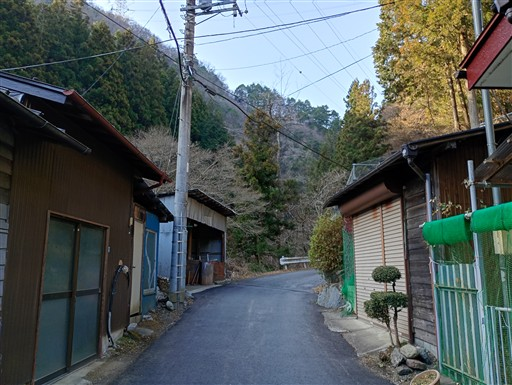
さて、登山口が全く分からない。地図だとこの沢沿いなのだが、どこを見ても道が見当たらない。
ひとまず沢に突っ込んでみて周囲を見渡すことにする。
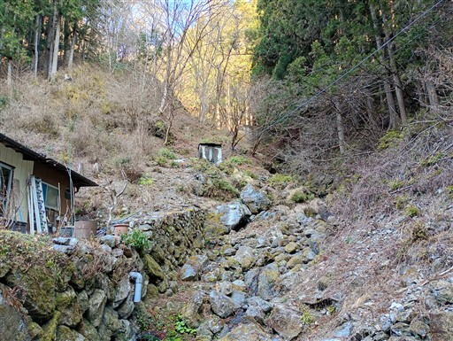
斜面で右往左往していると、頭上を歩いていく人が見える。
斜面を登って登山道に出る。この道、一体どこからやってきたのか？
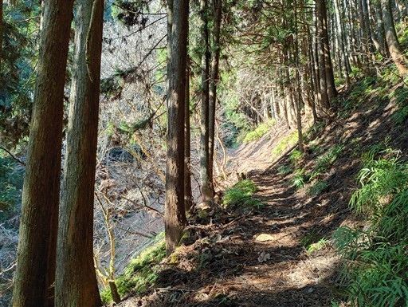
登山道が左右に分かれたところは二人別々の道を行ってみる。
右の道は墓などがあり不正解、左の道が正しかった。
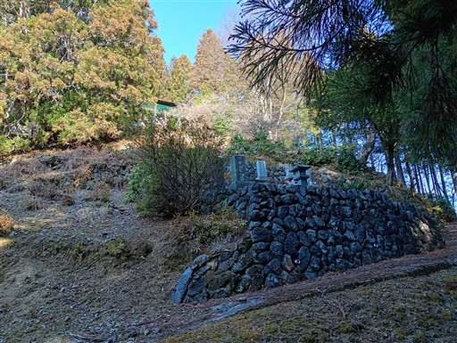
不案内ではあるが、植林地帯の中の歩きやすい道が続く。
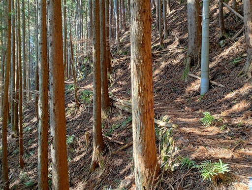
廃屋。こんな車道から遠く離れたところに住んでいた人がいたのだろうか？
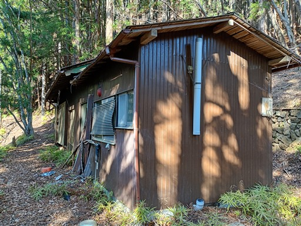
植林地帯が終わり、明るい道になる。登山道も楽しい道になる。
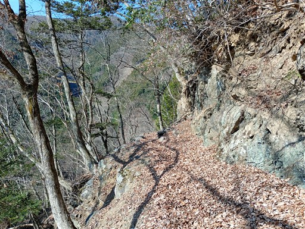
楽しい道だったのは束の間。あっという間に荒れたトラバース道になる。
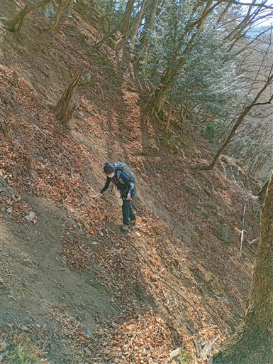
道が分からず、迷いながら進む。
この破れたネットを潜って行くのは正しいルートなのか？
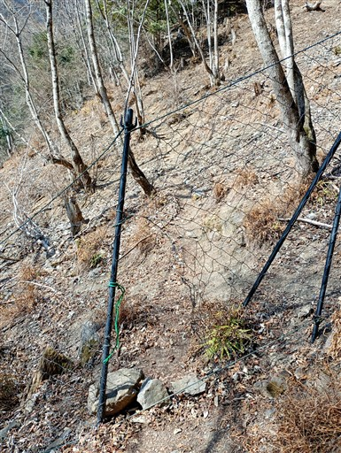
沢に下りてくる。ここからは沢を登っていく道だ。
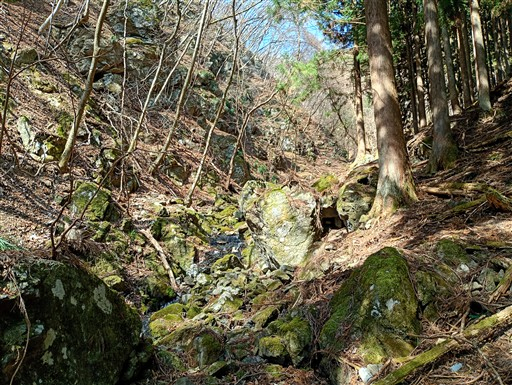
沢を登っていくが、何かがおかしい。性能の悪いGPSはかなり乱れている。
登っていくと、右側から沢が流入するが、そんな場所はないはず。
そして滝が現れる。バリエーションルートとは言え、多くの人が入るルート。
こんなに難易度が高いはずがない。
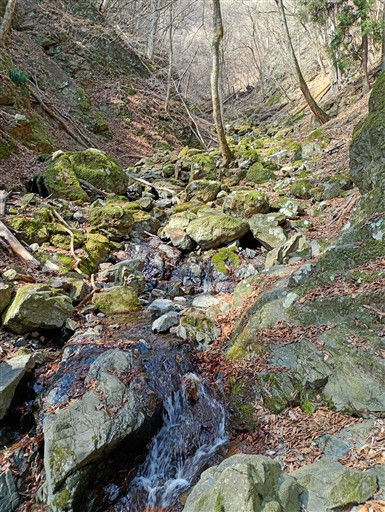
地図を何度も確認し、一本違う沢に入ってしまったのだと気づく。
沢に下りたところは二股になっていて、奥（写真の右）の沢が正しいルートだった。
二股になっているところまで引き返す。
ここ最近、ルートとGPSの点しか見なくなっていた。反省。
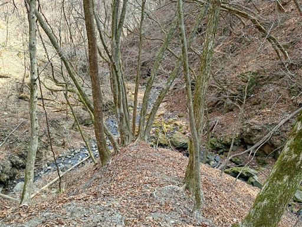
こちらが正しい沢。見た目は大して変わらないが、歩きやすさはだいぶ異なる。
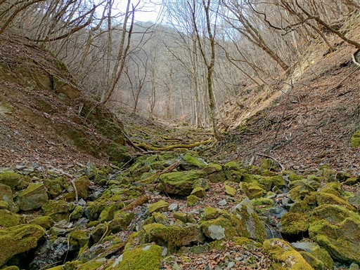
僅かに氷が残っている。
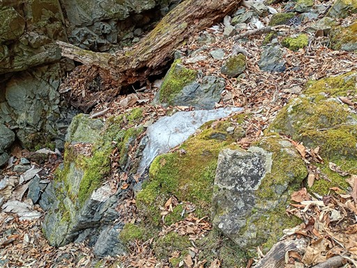
巨大な倒木が途中で折れている。
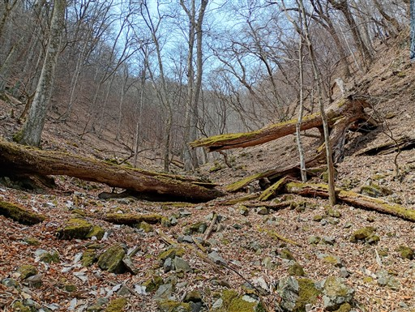
本日最初のフクジュソウを発見。沢沿いに一輪だけポツリと咲いている。
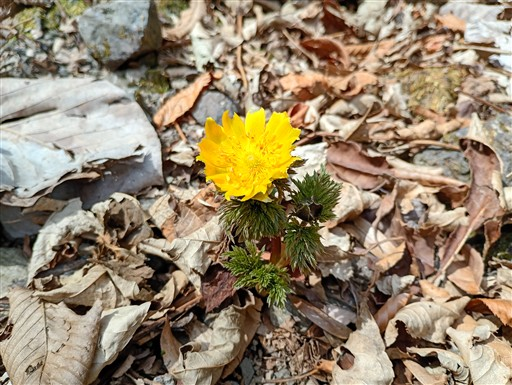
しばらく歩くと、植生保護のロープが現れる。
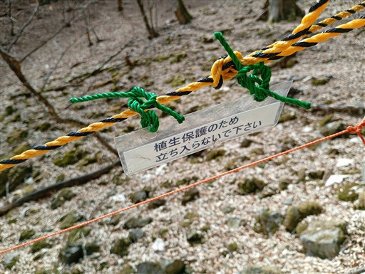
今度は足元に数輪の花を咲かせているフクジュソウを見つける。
美しい黄色だ。
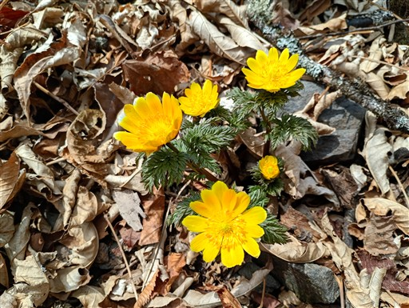
そして、フクジュソウの群落地が見えてきた。すごい規模だ。
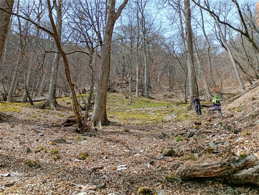
フクジュソウの大群落。こんな見事な花畑は初めて見た。
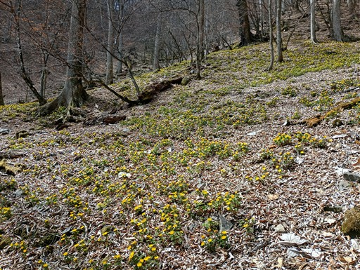
辺り一面フクジュソウ。ここで昼食休憩をとる。
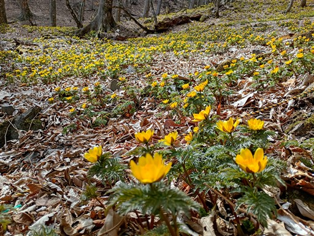
よく見ると、ロープの向こう側に、奥へ続く踏み跡が見える。
ロープが設置されたのは最近のようで、それより前の踏み跡なのだろう。
フクジュソウはかなり繊細な植物で、土が踏み固められると育たないらしい。
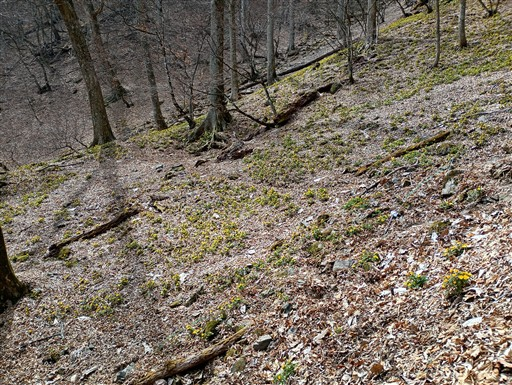
昼食をとったら出発。
逆ルートの人は道が分からず、保護ロープの向こう側から沢沿いを下ってくる人もいた。
もう少しロープの設置が必要かもしれない。
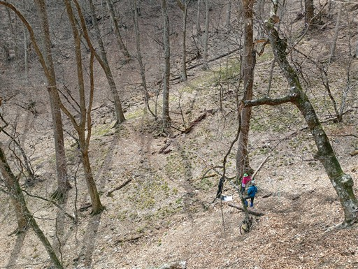
樹間から武甲山が見える。
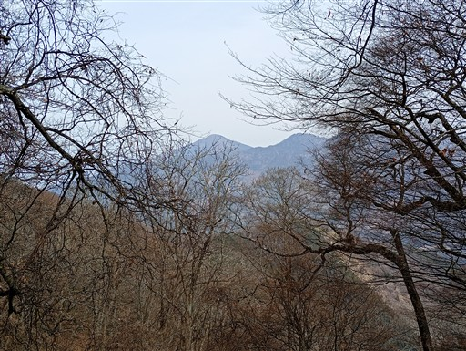
ブナの木が並んでいる。かなり大きな木が多い。
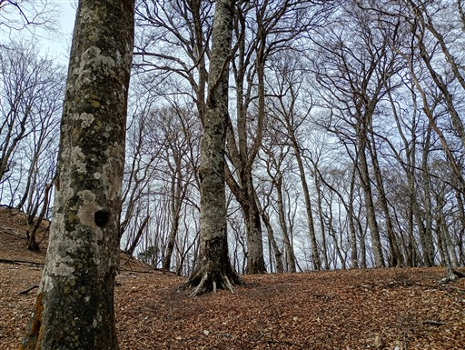
稜線に到達。ここからは一応登山道になる。
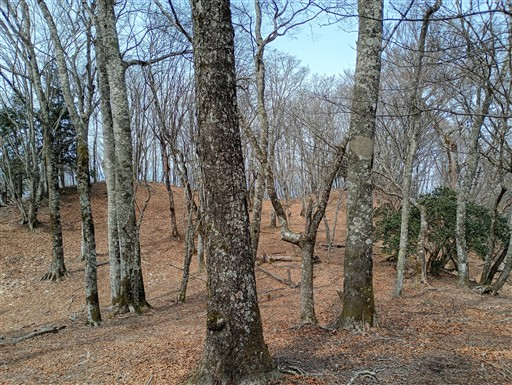
独標。本日の最高峰。標高1315m。
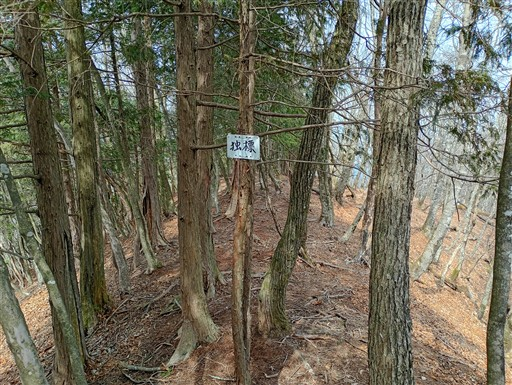
お隣の大ドッケ。一応、本日の山行を代表するピークの位置づけだが、
独標より低く、小さなピークだ。展望も広がらない。
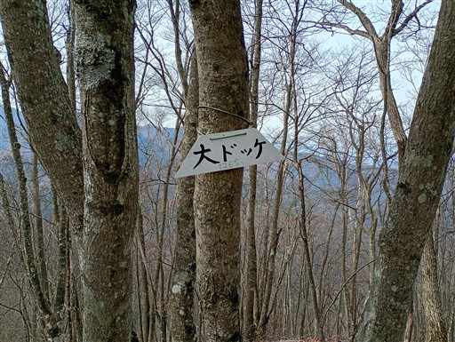
後は、尾根道を延々と下る。
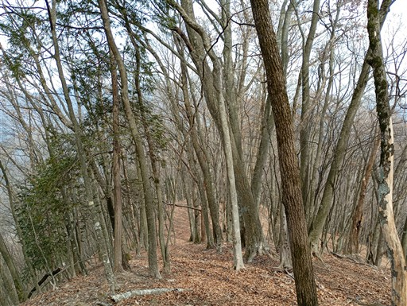
ネットに囲まれた空間。植生保護のネットと思われるが、何を守っているのだろう？
ネットの中はアセビが繁茂しているが、アセビを守るためとは思えない。
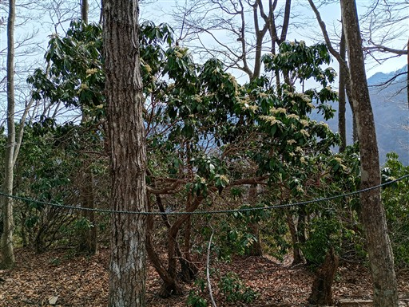
地蔵峠に到着。石碑、石祠、地蔵が祀られている。
こんな尾根の末端に古の峠があるとは不思議だ。どことどこを結んでいたのか？
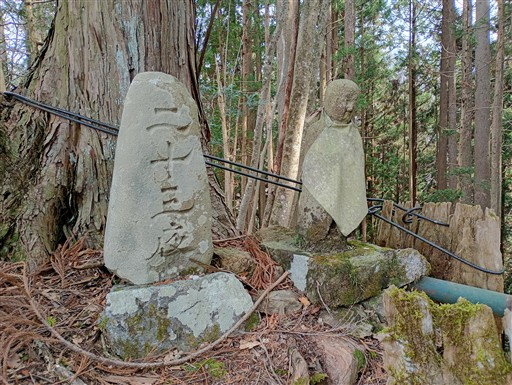
登りに使った道との分岐点に到着。
あとは、登り口がどこだったのかの確認だ。
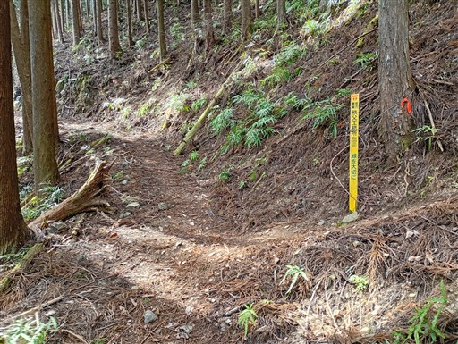
車道に出てくる。ここが登山口だったか。
確かに往路にこの分岐は確認したが、、、これは予習なしだと分からんだろう。
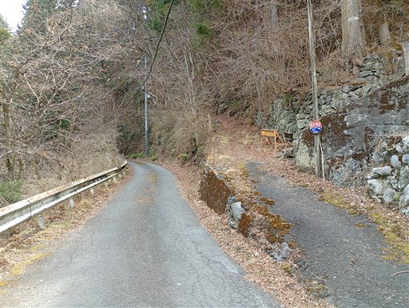
最後に大日堂に寄り道する。巨大な石碑が立っている。
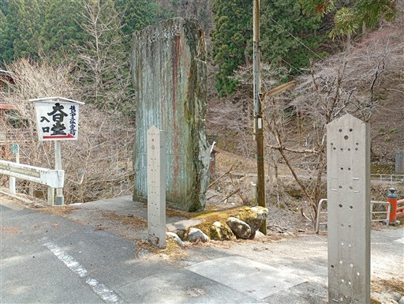
この建物の土台、見ているだけで怖い。
一番左の木は折れそうだし。いつか崩落しそう。
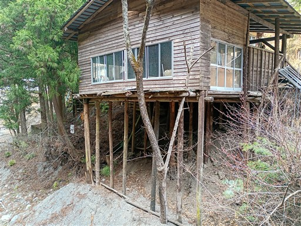
大日堂に到着。入口の仰々しさに比べると質素な神社だ。
駐車場に戻って帰宅する。
今回は道迷いが多く、反省の多い登山だった。
GPSが正しければそれで良いのだが、不測の事態に備えて
バリエーションルートを歩くときは地形図もきちんと見ないといけないことが分かった。
フクジュソウの群落は素晴らしく、きちんと保護されて今後も多くの人を楽しませ続けてほしい。
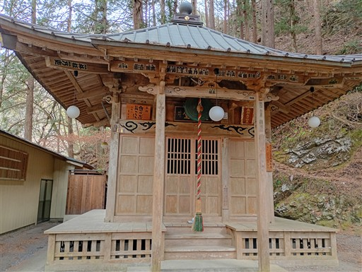